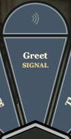
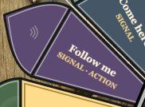
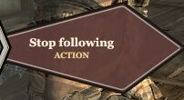
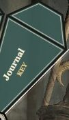
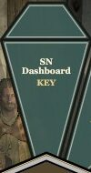
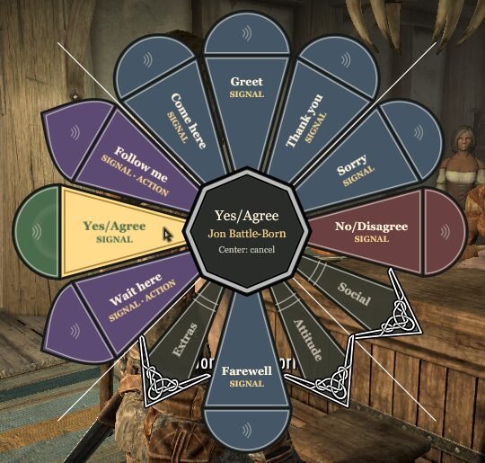
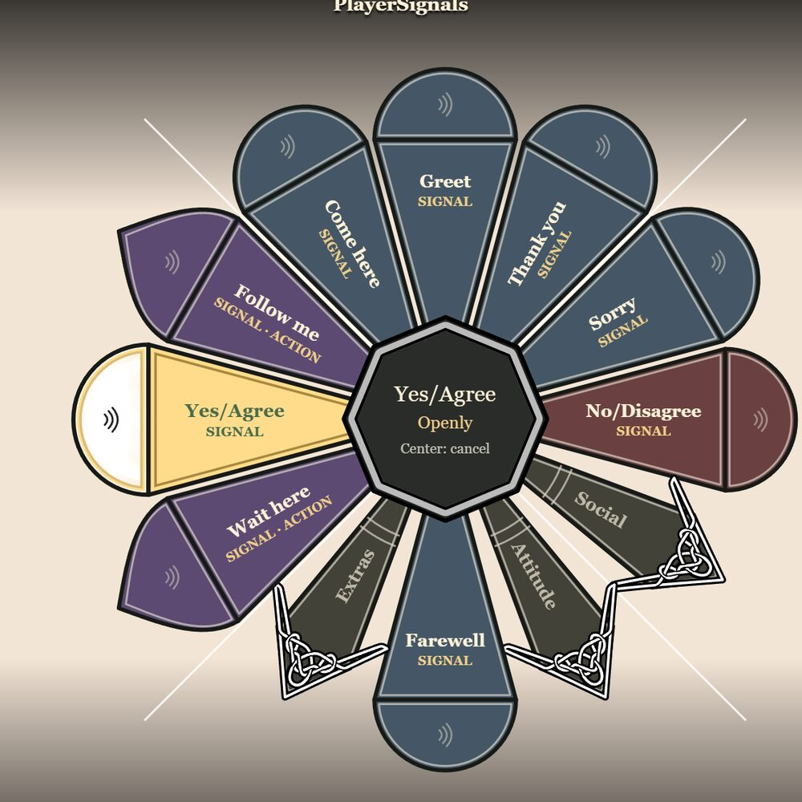
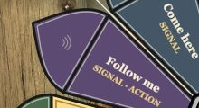
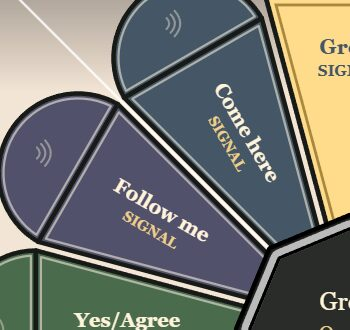
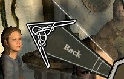

01 / Slot kinds
Five kinds of slot. Five different jobs.
Read the shape and badge. These in-game crops show the default slate theme.
Signal
SIGNALRound bulb

Narrates your gesture to the captured NPC.
Tip, Shift or no target: address everyone nearby.
Shipped example · Greet
Hybrid
SIGNAL · ACTIONPointed bulb

Targeted: requests an NPC action; adds a compliance sentence if SkyrimNet reports success. Openly: signal only, round blue-purple bulb, SIGNAL badge.
Shipped examples · Follow me, Wait here
Action
ACTIONDiamond

Runs a SkyrimNet action on the captured NPC, with no narration. Disabled without a target; Shift does not make it Openly.
Shipped example · Stop following (Extras)
Key
KEY

Presses a key after closing; no target needed. Journal: J. Raw SN Dashboard sends a Windows key press for mod hotkeys.
Raw needs PlayerSignals.dll + Address Library;
Skyrim must be foreground. No fallback.
Navigation
Celtic knot
No badge
Opens a submenu or goes Back.
No target needed. No narration.
Shipped examples · Social, Attitude, Extras, Back
02 / Target vs Openly
One person, or everyone nearby?
Choose the slice to address your captured NPC. Choose the tip to speak openly.
Slice → captured NPC
Crosshair target captured before the wheel opens

Bill nods in agreement and approval. This gesture is addressed to Jon Battle-Born.
Tip → Openly
Or hold Shift / X, or open with no target

Bill nods in agreement and approval. This gesture is addressed to everyone nearby.
No NPC under your crosshair? Every signal goes Openly automatically. The hub shows No target · Openly, and slices and tips both address everyone nearby. Actions need a target, so they’re greyed out; hybrids still work as signals.
NPCs react in their own way. They may not reply; nearby witnesses may join.
03 / Hybrids
A signal with a helping hand
Follow me and Wait here can also request an action from an eligible NPC.
Two gestures, two possibilities

SIGNAL · ACTION

SIGNAL
Openly · browser preview
Targeted + eligible NPC
If SkyrimNet reports success, the narration adds:
“Jon Battle-Born complies and stays put.”
The NPC may not act straight away.
Targeted + refused or failed
No compliance sentence is added.
Openly
Tip, Shift / X, or no captured target.
04 / Wheel and controls
Find your way around the wheel
A slice for the gesture. A tip for Openly. The hub keeps your bearings.

Back returns to the previous wheel.
In-game crop · Extras submenu
| Do this | Mouse / keyboard | Controller |
|---|---|---|
| Open | Right Alt | Optional pad binding |
| Choose | Mouse or ← → | Left stick aims |
| Select | Click / Enter | A |
| Openly | Tip / hold Shift | Hold X |
| Cancel | Esc / Right Alt / hub | B |
- Slice · address the captured NPC
- Tip · signal Openly
- Hub · gesture + audience; cancel
- Badge · signal, action, or key
- Arrow + knot · enter a submenu
05 / Customising
Make the wheel feel like you
Two editable files: where things go, and what your gestures say.
layout.json
Choose slots, colours, keys, and actions
{ "label": "Greet", "intent": "greet" }"color": "#6b4040"{ "label": "SN Dashboard", "hotkey": 64,
"raw": true, "delayMs": 0 }{ "label": "Wait here",
"intent": "wait_here",
"action": { "name": "WaitHere",
"args": {} } }intents.json
Give each signal its phrases
"greet": {
"narration":
"gives a friendly wave in greeting",
"notification": "greets",
"targetedNotification":
"greets {target}"
}Narration tells the story. The two notification phrases give local feedback.
"complianceNarration":
"{target} complies and stays put"Only added when SkyrimNet reports that the action succeeded.
Save both files, then load a save (F5/F9 works). No recompiling.
If something is invalid, a notification says what, and the wheel stays off until you fix it and load again.
For the full schema and setup: PlayerSignals player guide. For copy-paste configuration help: AI configuration helper.